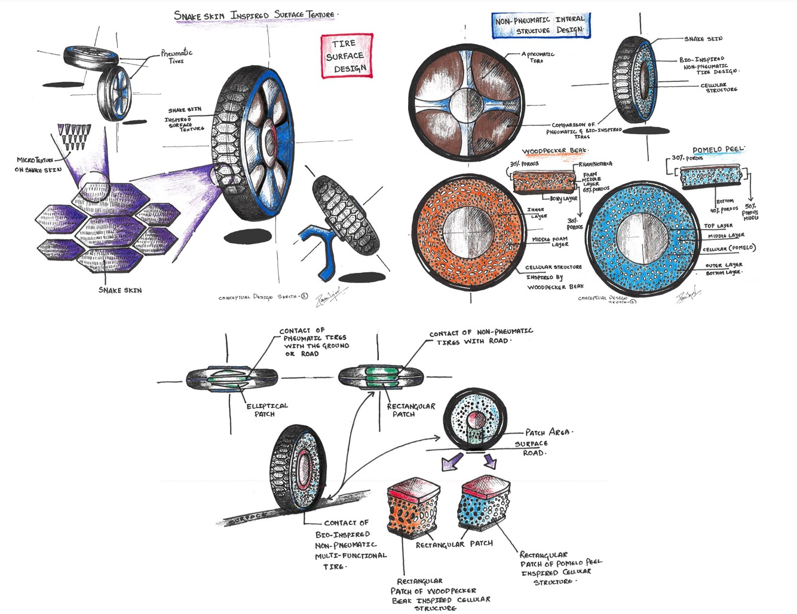
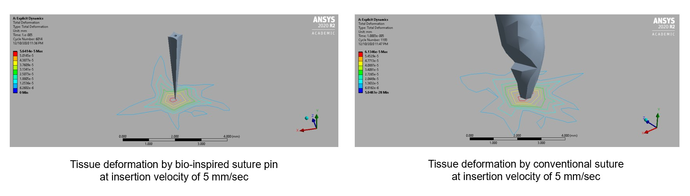
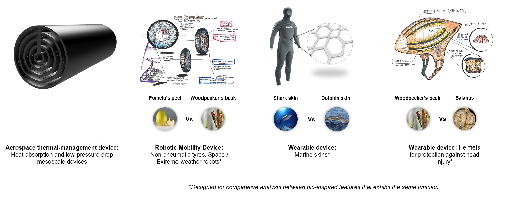

EXAMPLE WALKTHROUGH
Medical and Surgical Device: Painless Meso-scale Suture Pin for Wound Healing
The design integrates multiple embodiment functions. The first function is reduction of puncture force during insertion. The second is resistance to retraction while maintaining ease of insertion, thereby improving anchoring stability against external disturbances and reducing patient discomfort. Additionally, the device is designed to be biodegradable, reducing the need for post-operative removal procedures.

Step 1: Choosing relevant Domains
The initial selection of domains for integration is driven by two key factors: the functional intention of the concept and the overarching requirements of the design problem at hand.
Step 2: Explore Domain dendrograms
Cross-sections Domain
-
Within the Cross-Sections Domain, the function “reduce rupture or puncture” leads to the biological feature
“Beak cross-section (Kingfisher)”. Its performance arises from the integrated structure: rotational parabolic cross-sectional geometry combined with structural configuration: axial symmetry along the beak,
forming the integrated structural cause of low-impact water entry.


Surfaces Domain
-
Within the Surfaces Domain, the function “resist retraction and ease insertion” leads to the biological feature “micro/nano projection (porcupine barbs).”
The performance arises from the integrated structure: triangular micro-barbs combined with structural configuration: arranged sequentially with directional orientation toward the base,
enabling low insertion resistance and high pull-out resistance.


Step 3: Select features using meta-level design parameters
Multiple biological features may realise the same embodiment function within the same Domain. For example, both the woodpecker beak and pomelo peel exhibit impact resistance within the Cellular Structures Domain. When features overlap in function and Domain, differentiation is performed using meta-level parameters. In this case, interaction area and porosity serve as the primary criteria. Based on these parameters, the woodpecker beak is selected due to its high interaction area and low porosity at the contact/outer interface, making it more suitable for impact-resistant applications.
The detailed application of meta-level parameter selection is part of the broader DID and xDID methodology and is not fully developed within this example walkthrough.
Step 4: Combine
Following feature selection, a morphology matrix is used to combine features across Domains. The matrix enables systematic exploration of cross-domain integrations. For example, combining porcupine-inspired surface barbs with a kingfisher-inspired cross-section yields one configuration. Alternatively, the surface feature may be integrated with a distinct geometric form within the Shapes Domain to generate a different concept.
Concept 1: Cross-sections Domain: Beak cross-section (Kingfisher) + Surfaces Domain: Micro/Nano projections (Porcupine barbs)
Concept 2: Shapes Domain: Dummy organism + Surfaces Domain: Micro/Nano projections (Porcupine barbs)
Example Output: Painless meso-scale suture pins for wound healing


The resulting concept is a painless meso-scale suture pin. It integrates barbed surface structures for anchorage and retraction resistance with a streamlined cross-sectional geometry for reduced puncture force. Biodegradable material selection further supports post-operative convenience and reduces hospital revisits. Initial evaluation indicates reduced skin rupture and lower insertion force compared with conventional sutures.
APPLICATIONS

The effectiveness of the MBID ideation system is demonstrated through the development of multifunctional bio-inspired structural concepts across diverse application domains.
These include heat absorption and low-pressure drop meso-scale structures that combine camel-nostril-inspired cross-sectional geometries with Namib desert beetle-inspired surface micro-bumps to achieve heat absorption with reduced pressure drop. Non-pneumatic tyres for space and extreme-environment robotics integrate snakeskin-inspired surface features with woodpecker-beak-inspired cellular architectures for enhanced traction and impact resistance. Marine skins combine honeycomb cellular structures with sharkskin-inspired surface textures to enhance the hydrodynamic performance. Protective sports helmets integrate a penguin-inspired spindle geometry with luffa-sponge-derived cellular structures and corrugated conical forms inspired by Balanus to improve impact distribution and energy absorption.
The non-pneumatic tyres for space and extreme-environment robotics, marine skins, and protective sports helmets are developed primarily to identify meta-level design parameters through comparative analysis of biological features that exhibit the same embodiment function.
Disclaimer: The example walkthrough provides an overview of the method. Morphological feature selection, parameter definition, application of relevant physical principles, conceptual development, embodiment design, and engineering evaluation are determined by the specific problem definition.
RELATED PUBLICATIONS
1. Velivela, P.T., Letov, N., Liu, Y. and Zhao, Y.F., 2021. Application of domain integrated design methodology for bio-inspired design-a case study of suture pin design. Proceedings of the Design Society, 1, pp.487-496. DOI: 10.1017/pds.2021.49
2. Velivela, P.T., Ridard, A. and Zhao, Y.F., 2024. Parameters for selecting biological features in multifunctional bio-inspired design: a convergent evolution approach. Bioinspiration & Biomimetics. DOI: 10.1088/1748-3190/ad3ed3
3. Sarabhai S, Velivela PT, Zhao YF, Sanchez F, Kibsey M. Comparative Study of the Flow and Thermal Characteristics of Non-Stochastic Lattice and Bio-Inspired Multi-Scale Structures for Gas Turbine Engine Applications. InTurbo Expo: Power for Land, Sea, and Air 2023 Jun 26 (Vol. 87066, p. V11BT23A011). American Society of Mechanical Engineers. DOI: https://doi.org/10.1115/GT2023-103790
4. Velivela, P.T., Letov, N. and Zhao, Y.F., 2025. Meta-level design parameters for bio-inspired impact resistance: a case study in helmet design. Proceedings of the Design Society, 5, pp.2381-2390. DOI: https://doi.org/10.1017/pds.2025.10252
5. Velivela, P.T., Letov, N., Kong, L. and Zhao, Y.F., 2023. A Case Study of Multifunctional Non-Pneumatic Tire Design For The Validation of Meta-Level Design Parameter In Domain Integrated Design (DID) Method. Proceedings of the Design Society, 3, pp.39-48. DOI: 10.1017/pds.2023.52